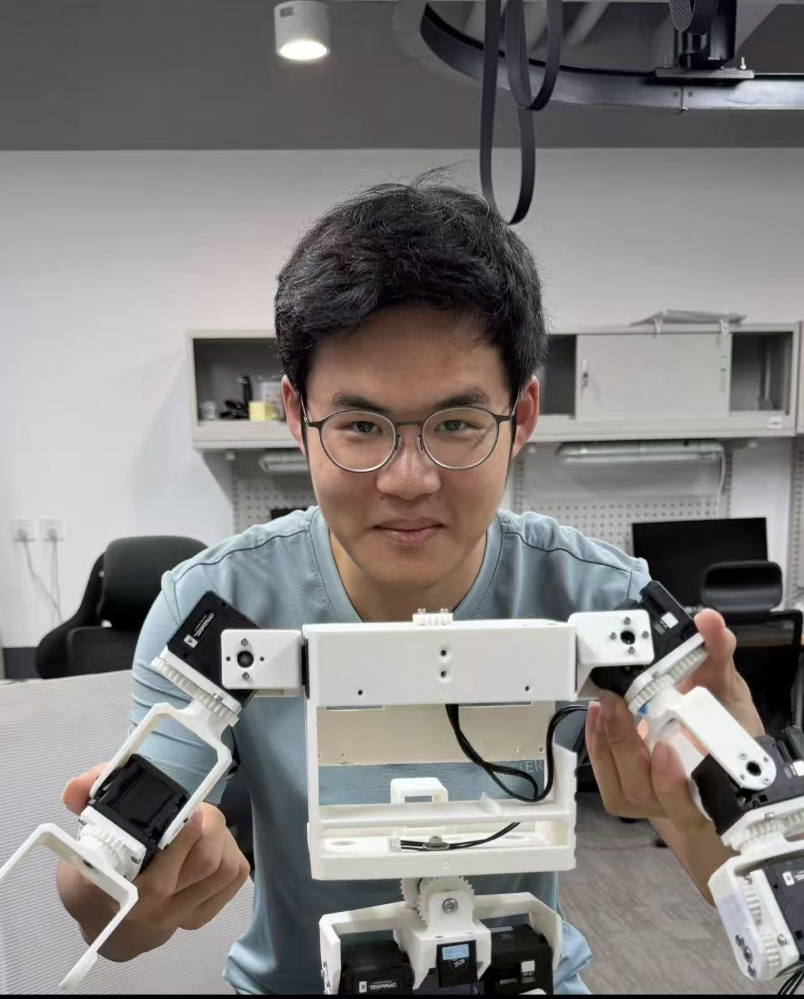
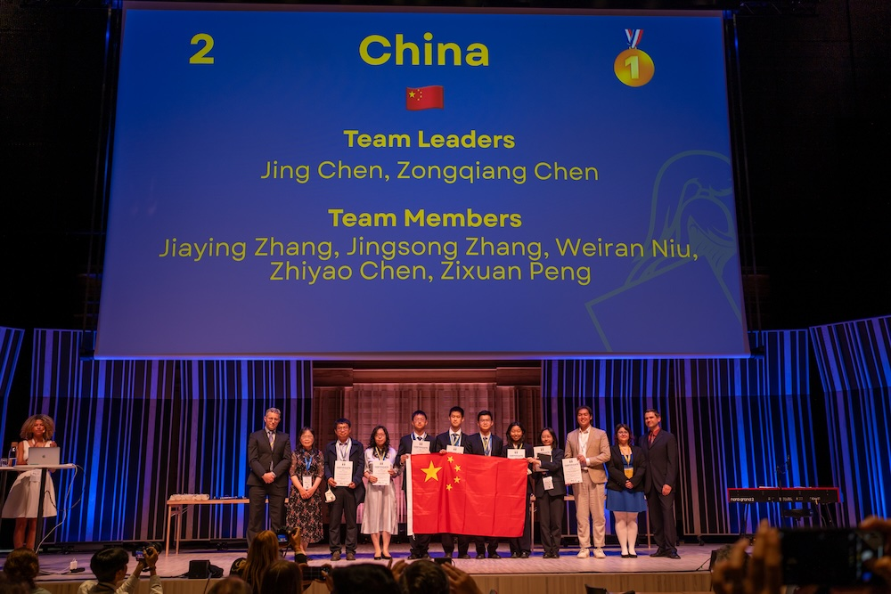
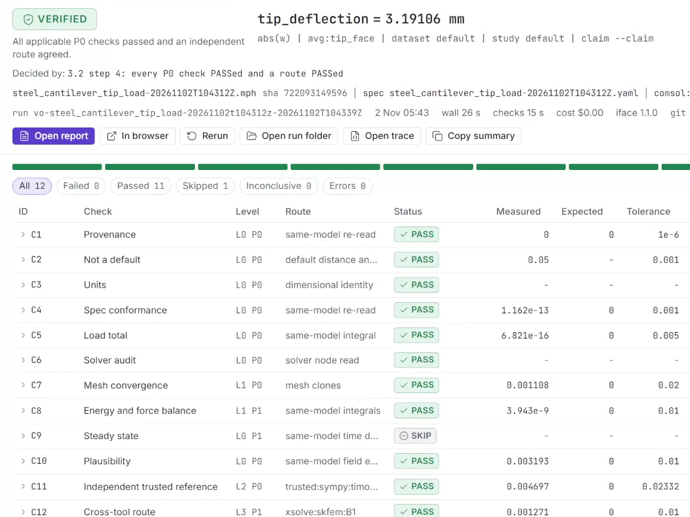
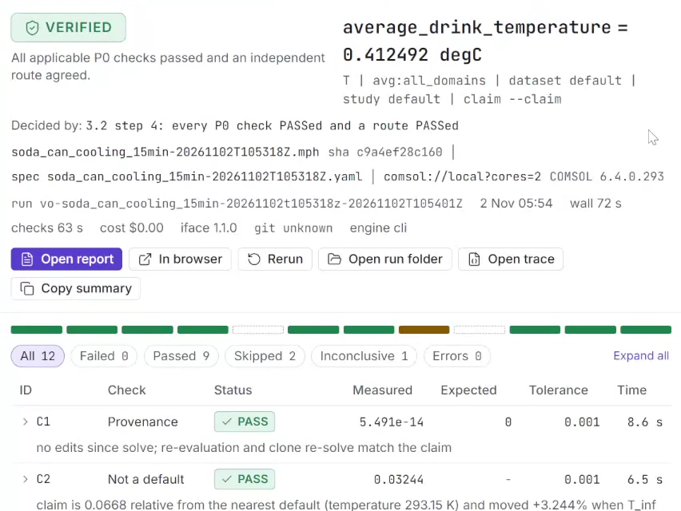
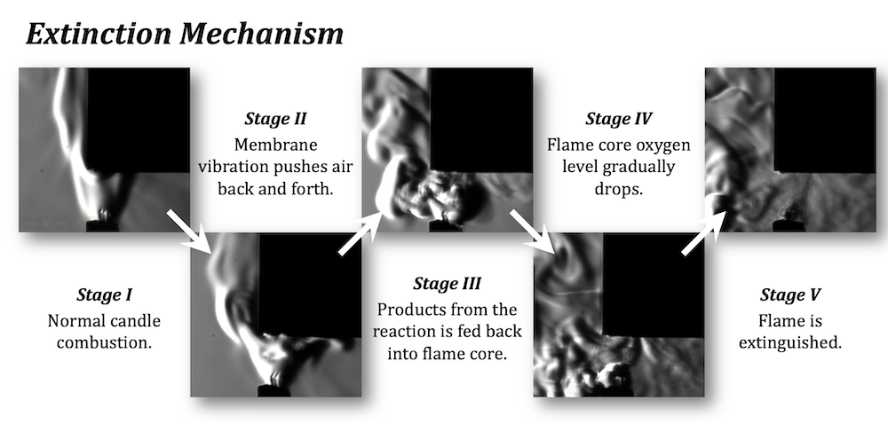
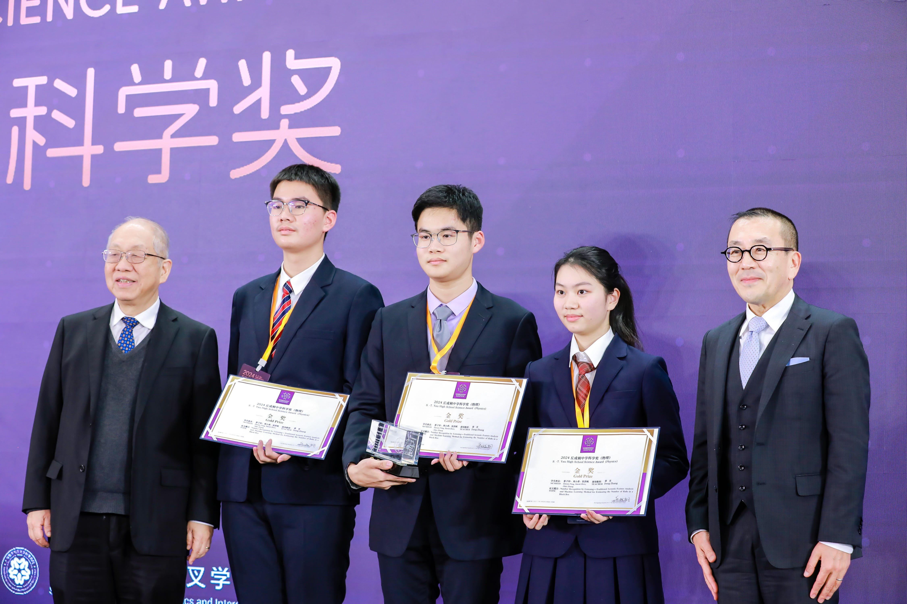

About Me
Steven PengZixuan
Physics & CS at Penn, class of 2030.

I work on humanoid robotics, motion generation and physics-based AI — most recently teaching a Unitree G1 to play table tennis. Now I’m founder and CEO of Atom Industries, a two-person startup building Atom, which lets engineers use AI to build simulations and checks every answer before anyone relies on it. Before Penn, I captained China’s national team at the International Young Physicists’ Tournament.
University of Pennsylvania · Atom Industries · Horizon Robotics
Experience
03-
Horizon Robotics2026
Robotics Lab Intern, Physics & AI · Beijing
Built a humanoid table-tennis pipeline for the 29-DoF Unitree G1 that turns human video into whole-body robot motion, through GMR retargeting and HoloMotion tracking at 50 Hz with 500 Hz motor PD; credited author on HoloMotion v2.0.
Wrote both halves myself: Rally3D recovers metric 3D ball trajectories, player poses and table/camera geometry from monocular WTT/ITTF broadcast footage (up to 92% 2D ball coverage on clean rallies); Hand2Body, a causal streaming diffusion model, maps one or two wrist trajectories to 135-D whole-body SMPL motion — 20.7 mm MPJPE and 8.5 mm / 0.72° wrist tracking at ~1.6 ms per frame, validated in MuJoCo.
-
Horizon Robotics2025
Robotics Lab Intern, Physics & AI · Beijing
Built a Stanford ToddlerBot from Dynamixel actuators and a Jetson Orin, trained MJX/Brax reinforcement-learning locomotion policies, and deployed them sim-to-real through hardware calibration, domain randomization and zero-shot transfer.
-
IYPT Team China2023–25
Team Captain
Selected as one of five national team members through five rounds and elected captain. Led Team China to gold and second place overall at IYPT 2025 — the team’s all-time high score — designing experiments and models for more than fifteen open-ended physics problems.

Education
University of Pennsylvania2030
B.A. in Physics & Computer Science
Nanjing Foreign Language School2026
Skills
- code
- Python · C · Assembly · JavaScript · MATLAB · SQL
- tools
- PyTorch · CUDA · MuJoCo · Isaac Sim · ROS2 · Linux · Weights & Biases · TensorBoard · Postgres
Atom Industries
founder & CEO · nowAtom builds physics simulations for engineers and researchers, and verifies every result before anyone relies on it.
- build
- An AI agent builds or edits the model in your own COMSOL Multiphysics® 6.4, from a plain-language description or an existing .mph file.
- verify
- Twelve checks read the solver’s own output — provenance, units, spec conformance, load totals, mesh convergence, plausibility. Two of them solve the problem a second way, without COMSOL.
- verdict
- VERIFIED CHECKED REFUSED — issued by check code, never by the agent.
- local
- A Windows desktop app that runs against your own COMSOL license. No telemetry, no account.
So far, on our development set: 13 of 13 planted errors caught with no false alarms on 11 correct models; a steel cantilever within 0.47% of its closed-form deflection. A team of two, in private beta; our entry in the Meta Global AI Developer Hackathon (startup track).


Research
03-
01
Acoustic Flame Suppression2025
Studied how sound puts out flames — an open IYPT problem — with 400,000 fps schlieren photography; proposed vortex-induced oxygen depletion as the main mechanism, with state-of-the-art theory–experiment agreement.
-
02
Entangled Photon Pairs2024
Nanjing University
Generated entangled photon pairs via SPDC in Prof. Xiaosong Ma’s lab and measured 16 polarization combinations to test the CHSH inequality: S = 2.487 against the classical limit of 2.
-
03
Non-Invasive Acoustic Counting2024
A CNN that counts objects sealed inside containers from their acoustic signatures. It earned an invention patent, a paper in the Cambridge Journal for Junior Scientists and, with me as team captain, gold at the 2024 S.-T. Yau High School Science Award (Physics) global finals.


Honors
07IYPT — Gold Medal & 2nd overall2025
Team China captain
S.-T. Yau Science Award (Physics) — Gold2024
Global finals
USAMO — Qualifier2024
Duke Math Meet China — 1st Individual & 1st Team2024
Team captain
HMMT February — Geometry, 13th of 6512024
Physics Bowl — National Gold2024
AMC 12B — Perfect Score2023